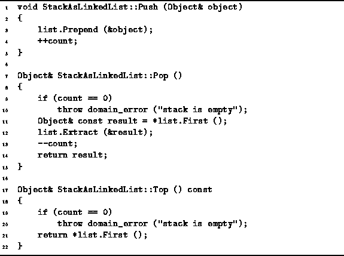

Data Structures and Algorithms
with Object-Oriented Design Patterns in C++
Data Structures and Algorithms
with Object-Oriented Design Patterns in C++
The Push, Pop, and Top,
member functions of the StackAsLinkedList class
are defined in Program  .
.

Program: StackAsLinkedList Class Push, Pop, and Top Member Function Definitions
The implementation of Push is trivial. It takes as its lone argument a reference to the Object to be pushed onto the stack and simply prepends a pointer to that object to the linked list list. Then, one is added to the count variable. The running time of the Push function is constant, since the Prepend function has a constant running time, and updating the count only takes O(1) time.
The Pop function is implemented using two of the LinkedList<T> member functions--First and Extract. The First function is used to obtain the first item in the linked list. The function First runs in constant time. The Extract function is then called to remove the first item from the linked list. In the worst case, Extract requires O(n) time to delete an item from a linked list of length n. But the worst-case time arises only when it is the last element of the list which is to be deleted. In the case of the Pop function, it is the first element which is deleted. This can be done in constant time. Assuming that the exception which is raised when Pop is called on an empty list does not occur, the running time for Pop is O(1).
There is a subtle point in this implementation:
Since it is not possible for two different variables
to occupy the same memory address, all of the pointers in the linked list will be unique
provided no object is pushed onto the stack more than once.
This ensures that the datum deleted from the linked
list by the Extract function is precisely the one returned
by the First function.
all of the pointers in the linked list will be unique
provided no object is pushed onto the stack more than once.
This ensures that the datum deleted from the linked
list by the Extract function is precisely the one returned
by the First function.
The only way that an object can be pushed safely onto the stack more than once is if the stack does not own its contained objects. If the stack owns its objects, then when the stack is deleted its destructor first deletes all the contained objects. As a result, if an object is pushed onto the stack twice, that object's destructor would be called twice. Such a program is not valid since deleting an object which has already been deleted is an error.
The definition of the Top function is quite simple. It simply returns a reference to the first object in the linked list. Provided the linked list is not empty, the running time of Top is O(1). If the linked list is empty, the Top function throws a domainerror exception.
 Copyright © 1997 by Bruno R. Preiss, P.Eng. All rights reserved.
Copyright © 1997 by Bruno R. Preiss, P.Eng. All rights reserved.